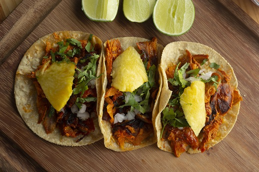

Tacos Al Pastor

Description
Tacos al Pastor are a beloved Mexican dish, featuring marinated pork cooked in the style of shawarma. They are traditionally served with fresh pineapple, onion, cilantro, and a variety of salsas for an explosion of flavors.
Ingredients
- 500g of pork, thinly sliced
- 3 dried guajillo chilies
- 2 garlic cloves
- 1/2 cup of pineapple juice
- 1/4 cup of apple cider vinegar
- 1 tsp oregano
- 1/2 tsp cumin
- Salt to taste
- Corn tortillas
- Fresh pineapple chunks
- Chopped onion
- Fresh cilantro
Steps
- Soak the guajillo chilies in hot water until soft.
- Blend the chilies with garlic, pineapple juice, vinegar, oregano, cumin, and salt into a sauce.
- Marinate the pork in the sauce for at least 2 hours, preferably overnight.
- Cook the marinated pork in a hot skillet until browned.
- Serve in warm tortillas with pineapple, onion, and cilantro.